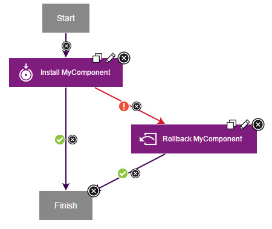

Rolling back components that fail to deploy
If an application process fails to deploy a component, you can add a rollback step to the process to reverse the deployment. In this case, you use the Replace with Last Deployed option.
About this task
For a video demonstration of rolling back components, see Rollback Scenarios in Deploy.
To roll back a component in this way, you add a step in the application process that runs if the component is not deployed. This Rollback Component step with the Replace with Last Deployed option redeploys the previously installed component version. The specified inventory still shows the new version and that the environment is noncompliant because the deployment of that version failed.This method works best if you want to roll back a component within the same application process that attempted to deploy it. For example, you can install a component, run tests on it, and if the tests fail, roll back the component.
- Install the new component version over the existing component version.
- Use the uninstall process for the component to remove the unwanted
version.
Create a rollback process that uses the Remove Undesired Incremental Versions option to roll back to a snapshot. See Rolling back to a snapshot.
Procedure
Example
